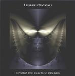

| Artist: | Lunar Chateau |
| Title: | Beyond The Reach Of Dreams |
| Label: | Musea FGBG 4393.AR |
| Length(s): | 39 minutes |
| Year(s) of release: | 2001 |
| Month of review: | [11/2001] |
| 1) | Olympus Mons | 3.56 |
| 2) | Far From Home | 3.52 |
| 3) | Consequences II | 5.40 |
| 4) | Solange In Rio | 4.33 |
| 5) | Beyond The Reach Of Dreams | 10.01 |
| 6) | Zeta Reticuli | 10.59 |
Far From Home is a vocal track and then the band immediately reminds me of the safe and warm music of Alan Parsons Project. The bass playing is moody and low rumbling (with a solo, even), the percussion is mid-tempo, but clearly present. Not really my kind of music, I prefer a bit more adventure, but it is certainly not bad.
On their previous album Consequences was one of the better tracks, although I thought the music could do with a bit more power. This time Milo Sekulovich hits his drumset at just the right time, resulting in a piece of music strongly reminiscent of Camel, with a rather strong driving groove. Especially the parts where the drums take the lead are really nice, and the melody is also good (but maybe a bit too much Camel like). When we have heard the above a few times, the vocals set in (which are again quite APP like). However, the music changes quite a bit here, while we move into a part where the piano dominates. The song ends in classical finale style with heavy drums.
Solange In Rio is more up-beat and jazzrockish in style. The keyboards continue to sound very warm and of course no guitar is to be heard here, but the bass and drums give the song a nice drive. The piano playing later reminded me in places of Supertramp (Breakfast In America).
As we reach the halfway point of the album, we come to the two epics on the album. The first is the instrumental title track. Opening with cosmic keyboards and wordless vocal sounds (who is that? It sounds a like a woman to me, but nobody is mentioned in the booklet). This is really a nice track, but it is not rock (or even pop). The music here is simply electronic music, bordering on New Age. After the waves of the ocean subside, we come again to some cosmic keyboards. A bit more bleep and tweet in here, the male vocalizations sound a bit a like monks singing (a trick that has been pulled a bit too often I think). The music is of the percolating kind, subdued and slowly developing with one hand playing a repetitive run and the other varying along the way. For electronic music this is really nice. Maybe the band ought to change styles, or at least devote some time to making an album in a more definitely electronic style. It might not surprise you that the rhythm section is absolutely silent here.
The final track is the 10 minute plus of Zeta Reticuli, which opens forcefully with the rhythm section and mellotronic choirs. A strong opening. The keyboards fulfill the role of a synthetic horn section. This always sounds a bit trite to me. The previous track had no rhythm section and no vocals, and it seems the band wants to make up for this, because the song has plenty of bass, drums and yes the vocals which could do with a bit more expression (to say the least). I like the bombastic side to this track, and the main theme is a strong one as well. However, sometimes, the keyboards sound a bit cliché to me. For the second part of the track, the music falls away entirely. This second part is much moodier. This second part is "inserted" between the main body of the track. In the third part the music of the first part returns in force with high pitched dominant keyboards.